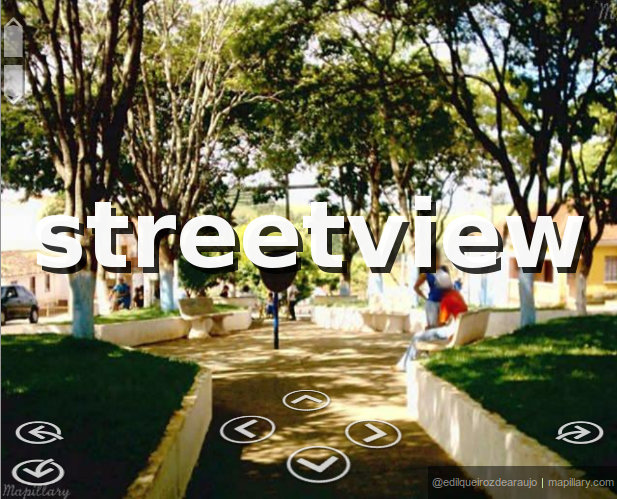
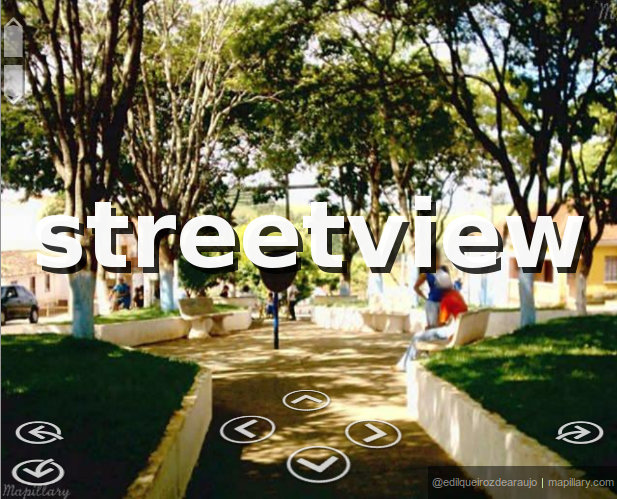

Ao Longo do Tempo com Mapillary Streetview
xxxxxxxxxxxx
Visite estas imagens no site Mapillary para ler e enviar comentários, e saber mais sobre o local. Clique nos botões abaixo:
Veja este lugar no streetview
xxxxxxxxxxxx
Visite estas imagens no site Mapillary para ler e enviar comentários, e saber mais sobre o local. Clique nos botões abaixo:
Veja este lugar no streetview
